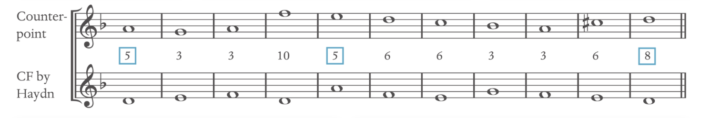
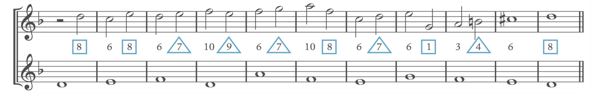

Species Counterpoint
Species Counterpoint Link to heading
First Species Link to heading
One-Note Against One-Note: whole note and no dissonance in first species.
- Only use Perfect Consonance (P5, P8) and Diatonic Consonances (major/minor 3rd and major/minor 6th)
- AVOID all seconds, fourths, sevenths and augmented/diminished intervals.
- Be aware of Diminished Fifth (4̂&7̂)
- AVOID dissonance, meaning the interval of tritone, in the scale of C: B&F
- Perfect unison is used for the first and last notes. (Can include one pair in the middle of a realization)
- Perfect fourth is considered as dissonance when writing in two parts.
- AVOID Unison.
- Raise 6̂ in minor if needed to avoid augmented second.
-
The two-part must NOT be further than 2 octaves apart.
-
The FIRST bar: lower voice must have 1̂ (C.F), top voice begins with 5̂ or 8̂
-
The LAST bar: lower voice must have 1̂ (C.F), top voice always end with 8̂ (5̂ rarely)
-
The two-part Cadence in the last two bars often uses scale degrees 2̂ and 7̂ and resolves to perfect consonants. The leading note 7̂ is raised as needed. Chromatic semitone is forbidden, i.e. Avoid 7̂->7̂#->8̂ cadence.
-
Vary motion by using contrary, similar, oblique and parallel. Parallel fifth and octaves are unforgivable.
-
Avoid two leaps in the same direction; two leaps of a third in the same direction are acceptable. A Leap of an octave is acceptable. Leaps are used for punctuation. Generally, after a leap larger than a third, move by step in the opposite direction. NEVER leap the interval of a Seventh
-
Try to construct the added part with a sense of direction: Melody usually has one climax (should not be a leading tone).
-
Voice crossing is forbidden.

Second Species: Link to heading
Two-Note Against One-Note: Half notes and dissonant passing or neighbouring notes in second species.
-
Applies most of the general rules for the first species.
-
The weak beat (unaccented beats) can be dissonant (2nd, 4th, 7th)
-
Leap into/out of dissonance is forbidden. Hence, dissonances are mostly passing notes or neighbour tones.
-
Unisons are permitted in weak beats.
-
It can begin with half-note rest. Second to last may contain a whole note. The last measure must be a whole tone. The last two is usually 6-8 interval.
-
It must start with 5̂ or 8̂. Final must be an octave above C.F.
-
Avoid using the same perfect interval on two successive down beats, even if the second one is approached by contrary motion.

Third Species Link to heading
Quarter Note Against One-Note: Quarter note and dissonant passing or neighbouring notes.
Fourth Species Link to heading
Two-Note Suspension Against One-Note: Half note tied across the barline and dissonant suspensions. (Syncopation)
-
Similar first-species rules apply.
-
Tied dissonances that resolve on weak beats; weak beats MUST be consonances: Consonances ties to dissonant (strong beat), lead to dissonant, and resolve to consonances. (Suspension resolve down)
-
Suspension does not require resolving down; it can go up.
-
Can leap in and out of dissonance.
-
2-3, 3-4, and 7-6 are the most used suspended pair.
Fifth Species Link to heading
Free Combination of All Above.
Overall Tricks for Species Counterpoint Link to heading
-
Moved mostly by steps.
-
Always approach P5 & P8 using contrary motion/oblique motion (so that parallel will be avoided completely)
-
A continuously large leap in the same direction is restricted, but a large opposite leap is acceptable. (Avoid seventh interval leap) ALWAYS leap in/out from consonant.
-
Semi-tone down -> leap octave up -> semi-tone down. Dissonances are passing/neighbouring tone only. Leap in and out of dissonance is forbidden.
-
Strategies for writing species counterpoints:
- Working backward: Start writing cadence and move backward
- Working from the high point: select a high point, leave and approach effectively
- Working from Stream of Steps: Look for a stepwise line, and build the ascending and descending line around the stepwise part.
Overall in Species Counterpoint Link to heading
Species counterpoint is a traditional way of learning about tonal voice leading.
When implementing species in a real sheet, always use the bottom notes with the top melody note as the interval (no matter the inversion)
*Knowing if the species counterpoint requires a sharp (#) on the 7̂: Link to heading
-
Look what key we’re dealing with. i.e. The key has double-sharp (2#). We are either in D major or b minor (the key is a reference point)
-
Look for the one that looks like the C.F. bass. What mode is it likely based on? i.e. Both notes start with B; it’s a 6̂ from D major or 1̂ in b minor
- 6̂ from D major: Rarely any species start with this. It must be b minor. 7̂#
- It’s the 6th mode from D; Aeolian mode is minor. Raise 7̂ (7̂#)